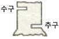
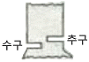
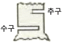
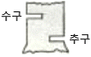

산림기능사 (2012-02-12 기출문제)
1과목: 조림 및 육림기술
1. 숲의 작업종 중 모수작업에 의하여 조성되는 후계림은 어떤 형태인가?
- 이령림
- 노령림
- 동령림
- 다층림
(정답률: 83%)

2. 종자를 채취하여 즉시 파종하여야 하는 것은?
- 소나무
- 일본잎갈나무
- 칠엽수
- 포플러류
(정답률: 67%)
3. 다음 수종 중 암수가 딴 그루인 것은?
- 은행나무
- 삼나무
- 신갈나무
- 소나무
(정답률: 90%)
4. 모수작업에 관한 설명으로 옳지 않은 것은?
- 갱신에 필요한 종자공급보다 갱신된 어린나무의 보호를 위한 작업이다.
- 남겨질 모수는 전체나무의 수에 비해 극히 적은 일부에 지나지 않는다.
- 모수는 결실이 양호한 성숙목을 선정한다.
- 양수의 갱신에 적합하다.
(정답률: 69%)
5. 종자의 성숙기가 6~7월인 수종은?
- 소나무
- 층층나무
- 자작나무
- 벚나무
(정답률: 79%)
6. 다음 중 조림지의 풀베기를 실시하는 시기로 가장 적합한 것은?
- 3~5월
- 6~8월
- 9~11월
- 12~2월
(정답률: 91%)
7. 조림지의 숲 가꾸기 순서로 옳은 것은?
- 풀베기 → 제벌 → 간벌
- 풀베기 → 간벌 → 제벌
- 제벌 → 풀베기 → 간벌
- 제벌 → 간벌 → 풀베기
(정답률: 72%)
8. 다음 우량묘의 조건으로 틀린 것은?
- 발육이 왕성하고 신초의 발달이 양호한 것
- 우량한 유전성을 지닌 것
- 측근과 세근이 잘 발달된 것
- 침엽수종의 묘에 있어서는 줄기가 곧고 측아가 정아보다 우세한 것
(정답률: 86%)
9. 리기다소나무 1년생 묘목의 곤포당 본수는?
- 1000본
- 2000본
- 3000본
- 4000본
(정답률: 73%)
10. 일정한 면적에 직사각형 식재를 할 때, 묘목수의 계산은?
- 조림지면적 / 묘간거리
- 조림지면적 / 묘간거리2
- 조림지면적 / (묘간거리2×0.866)
- 조림지면적 / (묘간거리×줄사이거리)
(정답률: 83%)
11. 묘목의 뿌리가 2년생, 줄기가 1년생을 나타내는 삽목묘의 연령 표기를 바르게 한 것은?
- 2 - 1묘
- 1 - 2묘
- 1/2묘
- 2/1묘
(정답률: 76%)
12. 발근촉진제로 쓰이는 식물성 호르몬제는?
- 지베렐린
- AMO - 1618
- 나프탈렌아세트산(NAA)
- 수산화나트륨
(정답률: 63%)
13. 다음 중 조림목의 보육을 위한 풀베기 방법으로 볼 수 없는 것은?
- 모두베기
- 둘레베기
- 골라베기
- 줄베기
(정답률: 74%)
14. 파종상을 만든 후 모판에 롤러로 흙의 입자와 입자 가밀착되도록 다짐작업을 함으로써 얻을 수 있는 장점은?
- 해충의 발생을 억제한다.
- 새의 피해를 줄인다.
- 땅속의 수분을 효과적으로 이용한다.
- 병해의 발생을 줄인다.
(정답률: 87%)
15. 다음 중 결실을 촉진시키는 방법으로 옳은 것은?
- 질소질 비료의 비율을 높여 시비한다.
- 줄기의 껍질을 환상으로 박피한다.
- 수목의 식재밀도를 높게 한다.
- 차광망을 씌워 그늘을 만들어 준다.
(정답률: 78%)
16. 다음 중 산벌작업의 주된 목적은?
- 천연갱신
- 임지 건조방지
- 보속적 수확
- 임목무육
(정답률: 49%)
17. 예비벌→하종벌→후벌의 순서로 시행되는 작업종은?
- 왜림작업
- 중림작업
- 산벌작업
- 모수림작업
(정답률: 83%)
18. 다음 중 임지의 보호방법으로 옳지 않은 것은?
- 비료목을 식재한다.
- 황폐한 임지는 등고선 방향으로 수평구를 설치한다.
- 임지 표면의 낙엽과 가지를 모두 제거한다.
- 균근균을 배양하여 임지에 공급한다.
(정답률: 83%)
19. 다음 중 콩과식물의 비료목이 아닌 것은?
- 다릅나무, 싸리류
- 칡, 아까시나무
- 붉나무, 누리장나무
- 자귀나무, 아까시나무
(정답률: 68%)
20. 묘포설계 구획 시에 시설부지, 주·부도 및 보도를 제외한 묘목을 양성하는 포지는 전체면적의 몇%가 적합한가?
- 30 ~ 40
- 40 ~ 50
- 50 ~ 60
- 60 ~ 70
(정답률: 71%)
21. 다음 중 천연림에 대한 설명으로 맞지 않는 것은?
- 수종이 다양하다.
- 나무의 크기가 일정하다.
- 층위가 다양하다.
- 원시림 또는 처녀림이라 한다.
(정답률: 87%)
22. 다음 중 택벌림에 대한 설명으로 틀린 것은?
- 병해와 충해에 저항력이 높다.
- 음수의 갱신에는 부적당하다.
- 임관이 항상 울폐한 상태에 있으므로 임지와 어린 나무가 보호를 받는다.
- 숲이 심미적 가치가 좋다.
(정답률: 66%)
23. 접목을 할 때 접수와 대목의 가장 좋은 조건은?
- 접수와 대목이 모두 휴면상태일 때
- 접수와 대목이 모두 왕성하게 생리적 활동을 할 때
- 접수는 휴면상태이고, 대목은 생리적 활동을 시작 할 때
- 접수는 생리적 활동을 시작하고, 대목은 휴면상태 일 때
(정답률: 84%)
24. 수목과 광선에 대한 설명으로 틀린 것은?
- 수종에 따라 광선의 요구도에 차이가 있는 것은 아니다.
- 광선은 임목의 생장에 절대적으로 필요하다.
- 소나무와 같은 수종을 양수라 한다.
- 전나무와 같은 수종을 음수라 한다.
(정답률: 76%)
25. 임목종자의 품질검사 항목에 해당되지 않는 것은?
- 종자의 건조법
- 순량률
- 발아율
- 종자 1000립의 중량
(정답률: 83%)
2과목: 산림보호
26. 다음 해충 중 소나무의 새순에 기생하여 양분을 빨아먹음으로써 수세를 약화시켜 새로운 순을 말라 죽이는 것은?
- 소나무좀
- 박쥐나방
- 향나무하늘소
- 소나무가루깍지벌레
(정답률: 58%)
27. 다음 중 25%의 살균제 100cc를 0.⑤%액으로 희석하는데 소요되는 물의 양(cc)은?
- 39900
- 49900
- 59900
- 69900
(정답률: 59%)
28. 산불발생이 가장 많은 시기는?
- 3~5월
- 6~8월
- 9~11월
- 12~2월
(정답률: 73%)
29. 유충과 성충이 모두 잎을 식해하는 해충은?
- 오리나무잎벌레
- 솔나방
- 미국흰불나방
- 매미나방
(정답률: 79%)
30. 칡과 같은 만경류를 제거하는 방법이 잘못된 것은?
- 글라신액제 처리 시기는 칡의 경우 농번기를 피하며 겨울 또는 봄에 실시한다.
- 글라신액제 원액을 흡수시킨 면봉은 칡머리 부분에 송곳으로 구멍을 뚫고 삽입한다.
- 글라신액제와 물을 1 : 1로 혼합한 액을 주입기로 주입한다.
- 만경류의 경우 되도록 어릴 때 제거하는 것이 효과적이다.
(정답률: 69%)
31. 다음 중 보르도액의 조제절차가 틀린 것은?
- 원료로 사용되는 황산구리는 순도 98.5%이상, 생석회는 순도 90%이상을 사용하여야 좋은 보르도액을 만들 수 있다.
- 보르도액의 조제 시 황산구리는 양철통을 사용 한다.
- 필요한 물의 80~90%의 물에 황산구리를 녹여 묽은 황산구리액을 만든다.
- 생석회는 소량의 물로 소화(消和, slaking)시킨 다음 필요한 물의 10~20%의 물에 넣어 석회유를 만든다.
(정답률: 73%)
32. 도시의 공원이나 가로수에서 나타나는 수목피해의 원인으로 틀린 것은?
- 토양 경화
- 호흡 불량
- 뿌리 조임
- 자연유기물비료 과다공급
(정답률: 81%)
33. 해충의 직접적인 구제방법 중 기계적방제법에 속하지 않는 것은?
- 포살법
- 소살법
- 유살법
- 냉각법
(정답률: 73%)
34. 진딧물이나 깍지벌레 등이 수목에 기생한 후 그 분비물 위에 번식하여 나무의 잎, 가지, 줄기가 검게 보이는 병은?
- 흰가루병
- 그을음병
- 줄기마름병
- 잎떨림병
(정답률: 86%)
35. 다음 중 비생물적 병원(柄原)인 것은?
- 선충
- 진균
- 공장폐수
- 파이토플라스마
(정답률: 82%)
36. 묘포장에서 많이 발생하는 모잘록병의 방제법으로 적합하지 않은 것은?
- 토양소득 및 종자소독을 한다.
- 돌려짓기를 한다.
- 질소질 비료를 많이 준다.
- 솎음질을 자주하여 생립본수(生立本數)를 조절한다.
(정답률: 86%)
37. 유아등으로 등화유살 할 수 있는 해충은?
- 오리나무잎벌레
- 솔잎혹파리
- 밤나무혹벌
- 어스렝이나방
(정답률: 78%)
38. 다음 해충 중 수피 틈이나 지피물 밑에서 제5령 유충으로 월동하는 것은?
- 솔나방
- 매미나방
- 어스렝이나방
- 버들재주나방
(정답률: 66%)
39. 다음 중 살충제의 부작용에 대한 설명으로 틀린 것은?
- 천적류는 접촉제보다 소화중독제의 영향을 특히 많이 받는다.
- 살충제 약해는 강우 전후에 발생하기 쉽다.
- 같은 살충제를 오랫동안 사용하면 저항성 해충군이 출현한다.
- 진딧물류나 응애류의 경우 살충제를 사용한 후 해충밀도가 급격히 증가할 수도 있다.
(정답률: 43%)
40. 농약의 형태에 대한 영어표기 중 “EC"가 뜻하는 것은?
- 액제
- 유제
- 수화제
- 입제
(정답률: 64%)
3과목: 임업기계일반
41. 노동강도의 경중(輕重)은 에너지대사율로 표시하는데 다음 중 표시 방법으로 옳은 것은?
- GNP
- MRA
- PPM
- RMR
(정답률: 70%)
42. 벌목작업 시 안전작업 방법으로 설명이 올바른 것은?
- 작업도구들은 벌목방향으로 치우고 도피 시 방해가 되지 않도록 한다.
- 벌목영역은 벌채목을 중심으로 수고의 3배이다.
- 벌목구역은 벌채목이 넘어가는 구역이다.
- 벌목영역에는 사람이 아무도 없어야 한다.
(정답률: 42%)
43. 기계톱 기화기의 벤트리관으로 유입된 연료량은 무엇에 의해 조정될 수 있는가?
- 저속조정나사와 노줄
- 지뢰쇠와 연료유입 조정니들 밸브
- 고속조정나사와 공전조정나사
- 배출 밸브막과 펌프막
(정답률: 69%)
44. 산림작업도구인 각식재용 양날괭이에 대한 설명으로 틀린 것은?
- 형태에 따라 타원형과 네모형이 있다.
- 도끼날 부분은 나무를 자르는 것으로만 사용한다.
- 타원형은 자갈이 섞이고 지중에 뿌리가 있는 곳에서 사용한다.
- 네모형은 땅이 무르고 자갈이 없으며 잡초가 많은 곳에 사용한다.
(정답률: 79%)
45. 가선집재의 장점에 대한 설명으로 틀린 것은?
- 다른 집재방법보다 지형조건의 영향을 적게 받는다.
- 임지 및 잔존임분에 피해를 최소화할 수 있다.
- 트랙터 집재에 비해 집재작업에 필요한 에너지가 적게 소요된다.
- 다른 집재방법보다 작업원에 대한 기술적 요구도 낮다.
(정답률: 68%)
46. 다음 그림에서 소경재 벌목작업의 간이수구에 의한 절단방법으로 가장 적합한 것은?




(정답률: 79%)
47. 실린더 속에서 가스가 압축되는 정도를 나타내는 압축비의 공식으로 적합한 것은?
- 압축비 = (흡입행정＋압축용적) / 연소실용적
- 압축비 = (그랭크실＋피스톤직경) / 크랭크실용적
- 압축비 = (연료실용적＋행정용적) / 연소실용적
- 압축비 = (연소실용적＋실린더내경) / 행정용적
(정답률: 72%)
48. 기계톱의 엔진 과열현상이 일어날 수 있는 원인으로 가장 거리가 먼 것은?
- 사용연료의 부적합
- 점화플러그의 불량
- 냉각팬의 먼지흡착
- 클러치의 측면마모
(정답률: 56%)
49. 내연기관에서 연접봉의 역할은?
- 크랭크와 피스톤을 연결하는 역할을 한다.
- 엔진의 파손된 부분을 용접하는 봉이다.
- 크랭크 양쪽으로 연결된 부분을 말한다.
- 엑셀 레버와 기화기를 연결하는 부분이다.
(정답률: 79%)
50. 2행정 기관은 크랭크축이 1회전할 때마다 몇 회 폭발하는가?
- 1회
- 2회
- 3회
- 4회
(정답률: 82%)
51. 라이싱거듀랄은 무엇에 사용되는 도구인가?
- 땅위에 쓰러져 있는 벌도목의 방향전환 도구이다.
- 벌도방향 위치선정을 위한 쐐기의 일종이다.
- 원형 기계톱 사용 시 기계톱이 목재사이에 끼었을 때 사용하는 쐐기의 일종이다.
- 자루가 짧은 침엽수 박피기의 일종이다.
(정답률: 59%)
52. 다음 중 반끌형 톱날의 연마각도로 맞는 것은?
- 창날각 : 35°
- 가슴각 : 60°
- 지붕각 : 85°
- 수직각 : 45°
(정답률: 72%)
53. 예불기 작업 시 작업자 상호간의 최소 안전거리는 몇m 이상이 적합한가?
- 4m
- 6m
- 8m
- 10m
(정답률: 84%)
54. 산림작업으로 인한 피로의 회복방법 중 적합하지 않은 것은?
- 휴식과 숙면을 취할 것
- 충분한 영양을 섭취할 것
- 산책 및 가벼운 체조를 실시할 것
- 스트레스 해소를 위하여 수영, 축구, 격투기 등의 운동을 할 것
(정답률: 88%)
55. 다음 중 도끼자루로 가장 적합한 나무는?
- 잣나무
- 소나무
- 물푸레나무
- 백합나무
(정답률: 82%)
56. 다음 중 체인톱의 안전장치에 속하지 않는 것은?(오류 신고가 접수된 문제입니다. 반드시 정답과 해설을 확인하시기 바랍니다.)
- 자동체인브레이크
- 안전 스로틀
- 핸드가드
- 스파이크
(정답률: 73%)
57. 2행정 내연기관에서 외부의 공기가 크랭크실로 유입되는 원리는?
- 피스톤의 흡입력
- 기화기의 공기펌프
- 크랭크실과 외부와의 기압차
- 크랭크축의 원운동
(정답률: 74%)
58. 다음 중 산림작업이 어려운 이유가 아닌 것은?
- 비, 바람 등과 같은 기상조건에 영향을 덜 받는다.
- 산림작업 도구 및 기계자체가 위험성을 내포하고 있다.
- 독사, 독충, 구르는 돌 등에 의한 피해를 받기 쉽다.
- 산악지의 장애물과 경사로 인해 미끄러지기 쉽다.
(정답률: 82%)
59. 체인톱의 주간정비사항으로만 조합된 것은?
- 스파크플러그 청소 및 간극 조정
- 기화기 연료막 점검 및 엔진오일 펌프 청소
- 시동줄 및 시동스프링 점검
- 연료통 및 여과기 청소
(정답률: 65%)
60. 예불기 사용 시 올바른 자세와 작업방법이 아닌 것은?
- 돌발적인 사고예방을 위하여 안전모, 안면보호망, 귀마개 등을 사용하여야 한다.
- 예불기를 멘 상태의 바른 자세는 예불기 톱날의 위치가 지상으로부터 10~20㎝에 위치하는 것이 좋다.
- 1년생 잡초제거 작업 시 작업의 폭은 1.5m가 적당하다.
- 항상 오른쪽 발을 앞으로 하고 전진할 때는 왼쪽 발을 먼저 앞으로 이동시킨다.
(정답률: 68%)